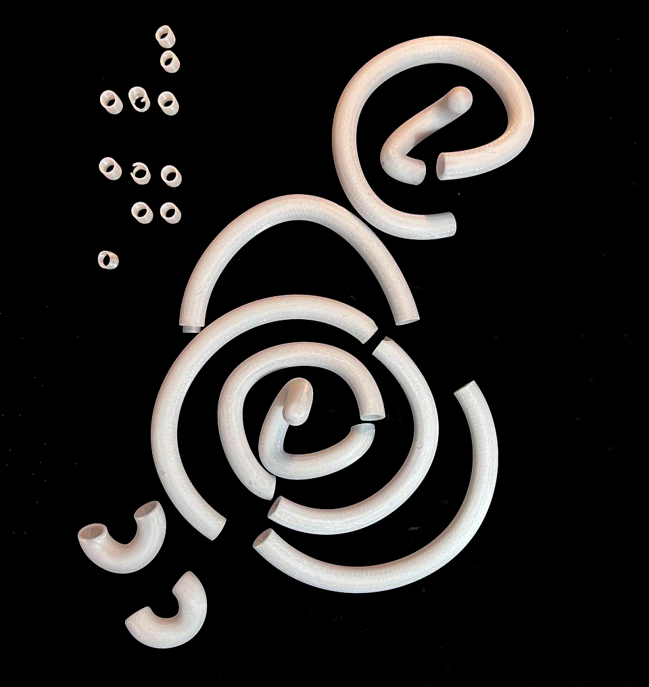

A06: Lamps!
For my 3D printed lamp, I am using a Raspberry Pi running HomeBridge to control an addressable LED strip. I am doing a modern take to the traditional haloguen lamps, using as main inspiration these graphic design reference:


-- LIGHT SOURCE --
I got an RGB 5050SMD addressable led strip with approximately 1 cm. of width.

-- FIRST TEST --
The biggest challenge in the creation of the lamp is ensuring a consistent diffusion of the light. Each LED is separated by a fixed distance, if the 3D-printed enclosure is too close to the surface of the LEDs, or doesnt have the appropiate thickness to diffuse the light, it will be too noticeable and not to pleasant to look at.

I am using transparent PETG filament. I 3D printed this enclosure, however, I quickly learned that the infill structure was a bit too noticeable to the exterior. I am looking for a truly diffusive look and this did not give the results I wanted.

Furthermore, printing this shape for a few loops would take 5 to 6 days to print. Which leave a very narrow margin of error if something goes wrong.
-- SECOND TEST --
For the second test, I narrowed the thickness of the tube. I also did solid walls, with 6 layers. However, even when using that high amount of walls, it did not diffuse the light the right way.

--VR SWIRLS --
Attempting to sketch the shape I wanted in Rhino didn't feel very natural. I could dictate where I wanted the points, but I would always look great from one side and skewed from the next.
I decided to try Gravity Sketch in VR see if I could create a draft that could later be tweaked in rhinoceros.

Ta da! Pretty happy with the final shape.

Now it was time to transfer into Rhino and tweak a few things before 3DPrinting.
I traced the main points of the VR doodle, then used grasshopper to automaticlaly interpolate between the points with a 3-degree nurb curve.THe curve was then used to create 2 sets of pipe, an internal (where the LED would flow, and an external, which is what is seen below.)
 - Rhinoceros 7 Commercial - [Perspective].jpg)
 - Rhinoceros 7 Commercial - [Perspective].jpg)
-- 3D PRINTING --
While I wanted to print it all at once and avoid any joint marks, I realized the risk unrecoverable failure was too big. By splitting the sections, we had more room for error.
Total print time was approximately 50 hours. Especially since infill had to be a bit heavier than usual to attempt a more favorable diffusion (and even then, its not market-standard level of diffusion yet.)
Needless to say, seeing this curvy shapes print was very satistfying.  - Rhinoceros 7 Commercial - [Perspective].jpg)


-- 6 Feet Above Ground --
I norder to achieve joining all pieces, I created an internal joint unique to each section of the loop. Grasshopper would automatically choose a t spot in the forming curve, offset it a few mm. to each side, split the section with circular planes and create pipes that are smaller than the main one.
Then, it would substract the space covered by these joints from the main pipe, to guarantee a perfect match.
--Techie Stuff --
This was a very tight system - the inner loop had only 13 - 14 mm. of clearance and the LED strip was 11 mm. I had to keep the LEDs on while I was putting the loops together.
In order to reach the end of the loop, I put a wire on the LEDs and made a tiny hole in the 3D print, from which I pulled the LED to reach the end. The entire lamp had to be buillt along the LEDs, since scrolling them in after the fact would have been impossible. (I didnt know this at the time)

One of the biggest challenges was figuring out the main joint, the one that would hold the entire lamp, without making it too protruding. I extended a few flaps on each side to give it slightly more strength than the other joints, and I tapered the top (which is where the main power line comes from, to make sure that the lamp can't fall from the wires since their diameter beofre reaching the LEDs is wider.

--The Results --
Here is the final lamp! Still lots to work on the programming to create teh type of animations I am looking for. But very happy with the diffusion, and the fact all pieces fit together and the lamp is self standing! Nice addition to my monstera too.

Source Files: